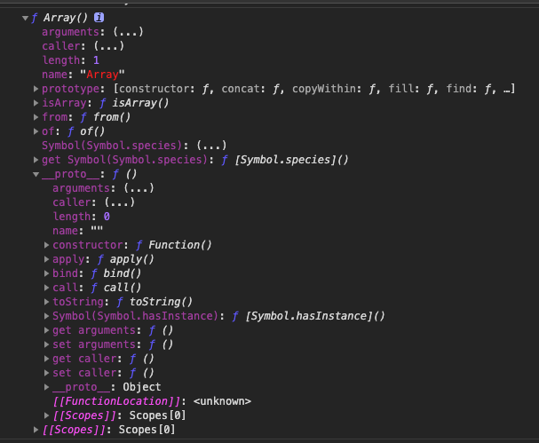
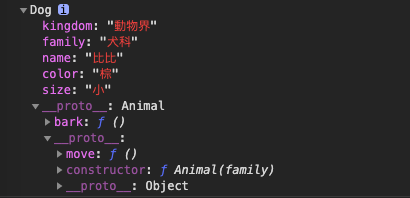

<!DOCTYPE html>
<html lang="zh-TW">
<head>
  <meta charset="UTF-8">
<meta name="viewport" content="width=device-width, initial-scale=1, maximum-scale=2">
<meta name="theme-color" content="#222">
<meta name="generator" content="Hexo 4.2.0">
  <link rel="apple-touch-icon" sizes="180x180" href="/images/apple-touch-icon-next.png">
  <link rel="icon" type="image/png" sizes="32x32" href="/images/favicon-32x32-next.png">
  <link rel="icon" type="image/png" sizes="16x16" href="/images/favicon-16x16-next.png">
  <link rel="mask-icon" href="/images/logo.svg" color="#222">

<link rel="stylesheet" href="/css/main.css">

<link rel="stylesheet" href="//fonts.googleapis.com/css?family=Noto Serif SC:300,300italic,400,400italic,700,700italic|Roboto Mono:300,300italic,400,400italic,700,700italic&display=swap&subset=latin,latin-ext">
<link rel="stylesheet" href="/lib/font-awesome/css/font-awesome.min.css">

<script id="hexo-configurations">
    var NexT = window.NexT || {};
    var CONFIG = {"hostname":"fan630.github.io","root":"/","scheme":"Pisces","version":"7.7.2","exturl":false,"sidebar":{"position":"right","display":"post","padding":18,"offset":12,"onmobile":false},"copycode":{"enable":true,"show_result":true,"style":"flat"},"back2top":{"enable":true,"sidebar":false,"scrollpercent":true},"bookmark":{"enable":true,"color":"#222","save":"auto"},"fancybox":false,"mediumzoom":false,"lazyload":false,"pangu":false,"comments":{"style":"tabs","active":null,"storage":true,"lazyload":false,"nav":null},"algolia":{"hits":{"per_page":10},"labels":{"input_placeholder":"Search for Posts","hits_empty":"We didn't find any results for the search: ${query}","hits_stats":"${hits} results found in ${time} ms"}},"localsearch":{"enable":true,"trigger":"auto","top_n_per_article":1,"unescape":false,"preload":false},"motion":{"enable":true,"async":false,"transition":{"post_block":"fadeIn","post_header":"slideDownIn","post_body":"slideDownIn","coll_header":"slideLeftIn","sidebar":"slideUpIn"}},"path":"search.json"};
  </script>

  <meta name="description" content="會有這一篇文章, 是因為在研究promise的時候, 聽到一句話 『function也是物件的一種, 可以透過__proto__看到他的最底層也是Object』, 於是就那麼簡單和輕易的開啟我的研究之路了, 此篇文章不敢說深入但至少淺出到自己可以看懂.">
<meta property="og:type" content="article">
<meta property="og:title" content="物件原型鍊">
<meta property="og:url" content="http://fan630.github.io/uncategorized/2020/03/06/object-prototype/index.html">
<meta property="og:site_name" content="擴充海馬迴的百寶箱">
<meta property="og:description" content="會有這一篇文章, 是因為在研究promise的時候, 聽到一句話 『function也是物件的一種, 可以透過__proto__看到他的最底層也是Object』, 於是就那麼簡單和輕易的開啟我的研究之路了, 此篇文章不敢說深入但至少淺出到自己可以看懂.">
<meta property="og:locale" content="zh_TW">
<meta property="og:image" content="https://images.unsplash.com/photo-1581062931625-633ac7286045?ixlib=rb-1.2.1&ixid=eyJhcHBfaWQiOjEyMDd9&auto=format&fit=crop&w=350&q=150">
<meta property="og:image" content="http://fan630.github.io/uncategorized/2020/03/06/object-prototype/array.png">
<meta property="og:image" content="http://fan630.github.io/uncategorized/2020/03/06/object-prototype/real_array.png">
<meta property="og:image" content="http://fan630.github.io/uncategorized/2020/03/06/object-prototype/array_with_proto_.png">
<meta property="og:image" content="http://fan630.github.io/uncategorized/2020/03/06/object-prototype/prototype_1.png">
<meta property="og:image" content="http://fan630.github.io/uncategorized/2020/03/06/object-prototype/aaa_getLast.png">
<meta property="og:image" content="http://fan630.github.io/uncategorized/2020/03/06/object-prototype/aaa_getLast.png">
<meta property="og:image" content="http://fan630.github.io/uncategorized/2020/03/06/object-prototype/bark.png">
<meta property="og:image" content="http://fan630.github.io/uncategorized/2020/03/06/object-prototype/second_dog.png">
<meta property="og:image" content="http://fan630.github.io/uncategorized/2020/03/06/object-prototype/step1.png">
<meta property="og:image" content="http://fan630.github.io/uncategorized/2020/03/06/object-prototype/step2.png">
<meta property="og:image" content="http://fan630.github.io/uncategorized/2020/03/06/object-prototype/constructor.png">
<meta property="og:image" content="http://fan630.github.io/uncategorized/2020/03/06/object-prototype/cat.png">
<meta property="og:image" content="http://fan630.github.io/uncategorized/2020/03/06/object-prototype/all.png">
<meta property="og:image" content="http://fan630.github.io/uncategorized/2020/03/06/object-prototype/origin.png">
<meta property="article:published_time" content="2020-03-06T13:21:39.000Z">
<meta property="article:modified_time" content="2020-03-21T15:12:00.222Z">
<meta property="article:author" content="Norris">
<meta property="article:tag" content="javascript">
<meta name="twitter:card" content="summary">
<meta name="twitter:image" content="https://images.unsplash.com/photo-1581062931625-633ac7286045?ixlib=rb-1.2.1&ixid=eyJhcHBfaWQiOjEyMDd9&auto=format&fit=crop&w=350&q=150">

<link rel="canonical" href="http://fan630.github.io/uncategorized/2020/03/06/object-prototype/">


<script id="page-configurations">
  // https://hexo.io/docs/variables.html
  CONFIG.page = {
    sidebar: "",
    isHome : false,
    isPost : true
  };
</script>

  <title>物件原型鍊 | 擴充海馬迴的百寶箱</title>
  


  <noscript>
  <style>
  .use-motion .brand,
  .use-motion .menu-item,
  .sidebar-inner,
  .use-motion .post-block,
  .use-motion .pagination,
  .use-motion .comments,
  .use-motion .post-header,
  .use-motion .post-body,
  .use-motion .collection-header { opacity: initial; }

  .use-motion .site-title,
  .use-motion .site-subtitle {
    opacity: initial;
    top: initial;
  }

  .use-motion .logo-line-before i { left: initial; }
  .use-motion .logo-line-after i { right: initial; }
  </style>
</noscript>

</head>

<body itemscope itemtype="http://schema.org/WebPage">
  <div class="container use-motion">
    <div class="headband"></div>

    <header class="header" itemscope itemtype="http://schema.org/WPHeader">
      <div class="header-inner"><div class="site-brand-container">
  <div class="site-nav-toggle">
    <div class="toggle" aria-label="切換導航欄">
      <span class="toggle-line toggle-line-first"></span>
      <span class="toggle-line toggle-line-middle"></span>
      <span class="toggle-line toggle-line-last"></span>
    </div>
  </div>

  <div class="site-meta">

    <div>
      <a href="/" class="brand" rel="start">
        <span class="logo-line-before"><i></i></span>
        <span class="site-title">擴充海馬迴的百寶箱</span>
        <span class="logo-line-after"><i></i></span>
      </a>
    </div>
        <p class="site-subtitle">屒型人</p>
  </div>

  <div class="site-nav-right">
    <div class="toggle popup-trigger">
        <i class="fa fa-search fa-fw fa-lg"></i>
    </div>
  </div>
</div>


<nav class="site-nav">
  
  <ul id="menu" class="menu">
        <li class="menu-item menu-item-home">

    <a href="/" rel="section"><i class="fa fa-fw fa-home"></i>首頁</a>

  </li>
        <li class="menu-item menu-item-tags">

    <a href="/tags/" rel="section"><i class="fa fa-fw fa-tags"></i>標籤</a>

  </li>
        <li class="menu-item menu-item-categories">

    <a href="/categories/" rel="section"><i class="fa fa-fw fa-th"></i>分類</a>

  </li>
        <li class="menu-item menu-item-archives">

    <a href="/archives/" rel="section"><i class="fa fa-fw fa-archive"></i>歸檔</a>

  </li>
      <li class="menu-item menu-item-search">
        <a role="button" class="popup-trigger"><i class="fa fa-search fa-fw"></i>搜尋
        </a>
      </li>
  </ul>

</nav>
  <div class="site-search">
    <div class="popup search-popup">
    <div class="search-header">
  <span class="search-icon">
    <i class="fa fa-search"></i>
  </span>
  <div class="search-input-container">
    <input autocomplete="off" autocorrect="off" autocapitalize="off"
           placeholder="搜尋..." spellcheck="false"
           type="search" class="search-input">
  </div>
  <span class="popup-btn-close">
    <i class="fa fa-times-circle"></i>
  </span>
</div>
<div id="search-result"></div>

</div>
<div class="search-pop-overlay"></div>

  </div>
</div>
    </header>

    
  <div class="back-to-top">
    <i class="fa fa-arrow-up"></i>
    <span>0%</span>
  </div>
  <div class="reading-progress-bar"></div>
  <a role="button" class="book-mark-link book-mark-link-fixed"></a>


    <main class="main">
      <div class="main-inner">
        <div class="content-wrap">
          

          <div class="content">
            

  <div class="posts-expand">
      
  
  
  <article itemscope itemtype="http://schema.org/Article" class="post-block " lang="zh-TW">
    <link itemprop="mainEntityOfPage" href="http://fan630.github.io/uncategorized/2020/03/06/object-prototype/">

    <span hidden itemprop="author" itemscope itemtype="http://schema.org/Person">
      <meta itemprop="image" content="/images/avatar.gif">
      <meta itemprop="name" content="Norris">
      <meta itemprop="description" content="每天都要進步一點點">
    </span>

    <span hidden itemprop="publisher" itemscope itemtype="http://schema.org/Organization">
      <meta itemprop="name" content="擴充海馬迴的百寶箱">
    </span>
      <header class="post-header">
        <h1 class="post-title" itemprop="name headline">
          物件原型鍊
        </h1>

        <div class="post-meta">
            <span class="post-meta-item">
              <span class="post-meta-item-icon">
                <i class="fa fa-calendar-o"></i>
              </span>
              <span class="post-meta-item-text">發表於</span>

              <time title="創建時間：2020-03-06 21:21:39" itemprop="dateCreated datePublished" datetime="2020-03-06T21:21:39+08:00">2020-03-06</time>
            </span>
              <span class="post-meta-item">
                <span class="post-meta-item-icon">
                  <i class="fa fa-calendar-check-o"></i>
                </span>
                <span class="post-meta-item-text">更新於</span>
                <time title="修改時間：2020-03-21 23:12:00" itemprop="dateModified" datetime="2020-03-21T23:12:00+08:00">2020-03-21</time>
              </span>

          
  
  <span class="post-meta-item">
    
      <span class="post-meta-item-icon">
        <i class="fa fa-comment-o"></i>
      </span>
      <span class="post-meta-item-text">Disqus：</span>
    
    <a title="disqus" href="/uncategorized/2020/03/06/object-prototype/#disqus_thread" itemprop="discussionUrl">
      <span class="post-comments-count disqus-comment-count" data-disqus-identifier="uncategorized/2020/03/06/object-prototype/" itemprop="commentCount"></span>
    </a>
  </span>
  
  

        </div>
      </header>

    
    
    
    <div class="post-body" itemprop="articleBody">

      
        <p></p>
<p>會有這一篇文章, 是因為在研究promise的時候, 聽到一句話 『<code>function</code>也是物件的一種, 可以透過<code>__proto__</code>看到他的最底層也是<code>Object</code>』, 於是就那麼簡單和輕易的開啟我的研究之路了, 此篇文章不敢說深入但至少淺出到自己可以看懂. </p>
<a id="more"></a>

<h2 id="原型在哪裡"><a href="#原型在哪裡" class="headerlink" title="原型在哪裡?"></a>原型在哪裡?</h2><p>在探討這個問題前, 先試試看把Array展開會出現什麼?</p>
<ul>
<li>出現原生一堆語法和prototype</li>
</ul>
<figure class="highlight javascript"><table><tr><td class="gutter"><pre><span class="line">1</span><br></pre></td><td class="code"><pre><span class="line"><span class="built_in">console</span>.dir(<span class="built_in">Array</span>)</span><br></pre></td></tr></table></figure>
<p></p>
<hr>
<ul>
<li>Array其實也是一個物件, 可以用 bbb[0], bbb.length取值, 這兩者都是物件取值的方法, 如何證明呢?<br>可以看底下的終極展開</li>
</ul>
<figure class="highlight javascript"><table><tr><td class="gutter"><pre><span class="line">1</span><br><span class="line">2</span><br></pre></td><td class="code"><pre><span class="line"><span class="keyword">const</span> bbb = [<span class="number">1</span>, <span class="number">2</span>, <span class="number">4</span>, <span class="number">5</span>, <span class="number">6</span>]</span><br><span class="line"><span class="built_in">console</span>.dir(bbb)</span><br></pre></td></tr></table></figure>
<p></p>
<hr>
<ul>
<li>出現<strong>proto</strong>, 往下翻會看到<strong>Object</strong>, 這就是陣列的原型, 裡面有很多的方法可以用<br>所以陣列的結構從這一個範例得知是: real-array -&gt; Array -&gt; Object</li>
</ul>
<figure class="highlight javascript"><table><tr><td class="gutter"><pre><span class="line">1</span><br></pre></td><td class="code"><pre><span class="line"><span class="built_in">console</span>.dir(bbb)</span><br></pre></td></tr></table></figure>
<p></p>
<hr>
<p>那物件呢?</p>
<figure class="highlight javascript"><table><tr><td class="gutter"><pre><span class="line">1</span><br><span class="line">2</span><br><span class="line">3</span><br><span class="line">4</span><br><span class="line">5</span><br><span class="line">6</span><br><span class="line">7</span><br><span class="line">8</span><br></pre></td><td class="code"><pre><span class="line"><span class="comment">// 出現原生一堆語法和prototype</span></span><br><span class="line"><span class="built_in">console</span>.dir(<span class="built_in">Object</span>)</span><br><span class="line"></span><br><span class="line"><span class="keyword">const</span> aaa = &#123;</span><br><span class="line">    xxx: <span class="number">123</span>, </span><br><span class="line">    yyy: <span class="number">456</span></span><br><span class="line">&#125;</span><br><span class="line"><span class="built_in">console</span>.dir(aaa) <span class="comment">// 出現__proto__</span></span><br></pre></td></tr></table></figure>

<p>知道這些有什麼用?  這是上課補充的知識, 先知道就好</p>
<ul>
<li><p>js是透過物件來建立, 沒有class的概念, 透過原型繼承做出類似類別繼承的方法</p>
</li>
<li><p>透過new這個方法所新增的物件,  會有繼承的特性, 屬於原型繼承</p>
</li>
<li><p>ES6 的class就是語法糖, 本質上還是原型繼承</p>
</li>
</ul>
<p>來看看這張圖吧</p>
<p></p>
<p>知道你沒辦法秒理解,  但其實根本很常在用啊!</p>
<figure class="highlight javascript"><table><tr><td class="gutter"><pre><span class="line">1</span><br></pre></td><td class="code"><pre><span class="line"><span class="keyword">const</span> aaa = [<span class="number">1</span>, <span class="number">2</span>, <span class="number">3</span>]</span><br></pre></td></tr></table></figure>
<p>obj.Prop1的意思就是要取得原本物件的屬性 =&gt; Ex: aaa.length<br>obj.PrototypeProp1 =&gt; 要用原型物件的方法 =&gt; Ex: aaa.forEach()<br>這個forEach就是透過原型拿到的方法, 不是原本存在在a裡面的方法</p>
<h2 id="原型觀念"><a href="#原型觀念" class="headerlink" title="原型觀念"></a>原型觀念</h2><p>截至目前為止, 原型有兩個重要的觀念</p>
<blockquote>
<ol>
<li>原型可共用方法和屬性, 就像forEach(), 這個方法在所有陣列中都可以用到</li>
<li>原型可以向上查找</li>
</ol>
</blockquote>
<h2 id="在原型內新增自己的方法"><a href="#在原型內新增自己的方法" class="headerlink" title="在原型內新增自己的方法"></a>在原型內新增自己的方法</h2><p>除了forEach這種原本就在Object裡面定義好的方法以外, 也可以自行定義方法.<br>現在要示範在a的原型, 加上新的方法(getLast), 另外一個陣列b是不是也符合共用呢?</p>
<p><em>請注意: <code>__proto__</code>這種寫法是不正式的</em></p>
<figure class="highlight javascript"><table><tr><td class="gutter"><pre><span class="line">1</span><br><span class="line">2</span><br><span class="line">3</span><br><span class="line">4</span><br><span class="line">5</span><br><span class="line">6</span><br></pre></td><td class="code"><pre><span class="line"><span class="keyword">const</span> aaa = [<span class="number">1</span>, <span class="number">2</span>, <span class="number">3</span>] </span><br><span class="line">aaa.__proto__.getLast = <span class="function"><span class="keyword">function</span>(<span class="params"></span>)</span>&#123;</span><br><span class="line">   <span class="keyword">return</span> <span class="keyword">this</span>[<span class="keyword">this</span>.length <span class="number">-1</span>]</span><br><span class="line">&#125;</span><br><span class="line"><span class="comment">// 可以看到在__proto＿新增了getLast這個方法</span></span><br><span class="line"><span class="built_in">console</span>.log(aaa)</span><br></pre></td></tr></table></figure>
<p></p>
<p>再來看看b? </p>
<figure class="highlight javascript"><table><tr><td class="gutter"><pre><span class="line">1</span><br><span class="line">2</span><br></pre></td><td class="code"><pre><span class="line"><span class="keyword">const</span> bbb = [<span class="number">4</span>, <span class="number">5</span>, <span class="number">6</span>]</span><br><span class="line"><span class="built_in">console</span>.log(bbb)</span><br></pre></td></tr></table></figure>
<p></p>
<p>因為原型是共用的, 所以都取用的到, 可以看到在__proto＿新增了getLast這個方法</p>
<hr>
<h2 id="使用建構式自定義原型"><a href="#使用建構式自定義原型" class="headerlink" title="使用建構式自定義原型"></a>使用建構式自定義原型</h2><p>那要怎麼自己建立起自己的原型?<br>也就是我在<strong>Object</strong>的底層上, 在建立起一個新的Object?</p>
<p>我們會用建構函式來建構</p>
<p>舉例如下:</p>
<figure class="highlight javascript"><table><tr><td class="gutter"><pre><span class="line">1</span><br><span class="line">2</span><br><span class="line">3</span><br><span class="line">4</span><br><span class="line">5</span><br></pre></td><td class="code"><pre><span class="line"><span class="function"><span class="keyword">function</span> <span class="title">Dog</span> (<span class="params">name, color, size</span>)</span>&#123;</span><br><span class="line">    <span class="keyword">this</span>.name = name</span><br><span class="line">    <span class="keyword">this</span>.color = color </span><br><span class="line">    <span class="keyword">this</span>.size = size </span><br><span class="line">&#125;</span><br></pre></td></tr></table></figure>
<p>但這只是模型, 還不是真正的狗, 如果要建立兩隻狗, 要先有建構函式. 簡單來說, 你沒有模型是沒辦法建立狗的, 因此要用<strong>new</strong>這個關鍵字來建立</p>
<figure class="highlight javascript"><table><tr><td class="gutter"><pre><span class="line">1</span><br></pre></td><td class="code"><pre><span class="line"><span class="keyword">const</span> Bibi = <span class="keyword">new</span> Dog(<span class="string">'比比'</span>, <span class="string">'棕色'</span>, <span class="string">'大型犬'</span>)</span><br></pre></td></tr></table></figure>

<h3 id="在原型裡面新增方法"><a href="#在原型裡面新增方法" class="headerlink" title="在原型裡面新增方法"></a>在原型裡面新增方法</h3><p>因為Dog是自行產生的物件, 所以在Dog這個基礎之上, 再加入方法.<br>要新增方法要透過prototype在原型中新增, 又因為是在原型裡面, 所以可以調用this. </p>
<figure class="highlight javascript"><table><tr><td class="gutter"><pre><span class="line">1</span><br><span class="line">2</span><br><span class="line">3</span><br><span class="line">4</span><br><span class="line">5</span><br><span class="line">6</span><br><span class="line">7</span><br></pre></td><td class="code"><pre><span class="line">Dog.prototype.bark = <span class="function"><span class="keyword">function</span>(<span class="params"></span>)</span>&#123;</span><br><span class="line">	 <span class="keyword">return</span> (<span class="keyword">this</span>.name + <span class="string">'吠叫'</span>)</span><br><span class="line">&#125;</span><br><span class="line"></span><br><span class="line"><span class="keyword">const</span> aaa = <span class="keyword">new</span> Dog(<span class="string">'比比'</span>, <span class="string">'棕'</span>, <span class="string">'小'</span>)</span><br><span class="line"><span class="built_in">console</span>.dir(aaa) <span class="comment">// 透過__proto_＿新建constructor</span></span><br><span class="line">aaa.bark() <span class="comment">// 比比吠叫</span></span><br></pre></td></tr></table></figure>

<p></p>
<p>再原型上加上一個方法, 那這個方法就會套用到所有透過狗函式所產生的實體上, 除了有各自的屬性外, 還有共用的方法</p>
<h3 id="小結"><a href="#小結" class="headerlink" title="小結"></a>小結</h3><p><strong>原型的優勢可以透過少許記憶體, 產生大量的物件.</strong></p>
<hr>
<h2 id="原始型別的包裹物件與原型的關聯"><a href="#原始型別的包裹物件與原型的關聯" class="headerlink" title="原始型別的包裹物件與原型的關聯"></a>原始型別的包裹物件與原型的關聯</h2><p>那除了物件以外, 字串和number也可以在自己的原型上建立各自的方法嗎? 答案是可行的！</p>
<figure class="highlight javascript"><table><tr><td class="gutter"><pre><span class="line">1</span><br><span class="line">2</span><br></pre></td><td class="code"><pre><span class="line"><span class="built_in">console</span>.dir(<span class="built_in">String</span>) <span class="comment">// 會出現很多方法</span></span><br><span class="line"><span class="built_in">console</span>.dir(<span class="built_in">Number</span>) <span class="comment">// 也會出現很多方法</span></span><br></pre></td></tr></table></figure>

<h3 id="字串上新增方法"><a href="#字串上新增方法" class="headerlink" title="字串上新增方法"></a>字串上新增方法</h3><figure class="highlight javascript"><table><tr><td class="gutter"><pre><span class="line">1</span><br><span class="line">2</span><br><span class="line">3</span><br><span class="line">4</span><br><span class="line">5</span><br><span class="line">6</span><br></pre></td><td class="code"><pre><span class="line"><span class="keyword">const</span> aaa = <span class="string">'123'</span></span><br><span class="line"><span class="built_in">String</span>.prototype.lastText = <span class="function"><span class="keyword">function</span> (<span class="params"></span>) </span>&#123;</span><br><span class="line">    <span class="keyword">return</span> <span class="keyword">this</span>[<span class="keyword">this</span>.length - <span class="number">1</span>]</span><br><span class="line">&#125;</span><br><span class="line"></span><br><span class="line"><span class="built_in">console</span>.log(aaa.lastText()) <span class="comment">// 3</span></span><br></pre></td></tr></table></figure>

<h3 id="數字上新增方法"><a href="#數字上新增方法" class="headerlink" title="數字上新增方法"></a>數字上新增方法</h3><figure class="highlight javascript"><table><tr><td class="gutter"><pre><span class="line">1</span><br><span class="line">2</span><br><span class="line">3</span><br><span class="line">4</span><br><span class="line">5</span><br><span class="line">6</span><br></pre></td><td class="code"><pre><span class="line"><span class="keyword">const</span> bbb = <span class="number">5</span></span><br><span class="line"><span class="built_in">Number</span>.prototype.square = <span class="function"><span class="keyword">function</span> (<span class="params"></span>)</span>&#123;</span><br><span class="line">    <span class="keyword">return</span> <span class="keyword">this</span>*<span class="keyword">this</span></span><br><span class="line">&#125;</span><br><span class="line"></span><br><span class="line"><span class="built_in">console</span>.log(bbb.square()) <span class="comment">// 2</span></span><br></pre></td></tr></table></figure>

<h3 id="其他應用"><a href="#其他應用" class="headerlink" title="其他應用"></a>其他應用</h3><p>這個例子是直接在Date物件上, 直接新增一個today的方法.<br>依此建立以後, 要知道今天的日期, 就可以在Date中call today即可</p>
<figure class="highlight javascript"><table><tr><td class="gutter"><pre><span class="line">1</span><br><span class="line">2</span><br><span class="line">3</span><br><span class="line">4</span><br><span class="line">5</span><br><span class="line">6</span><br><span class="line">7</span><br><span class="line">8</span><br><span class="line">9</span><br><span class="line">10</span><br><span class="line">11</span><br><span class="line">12</span><br></pre></td><td class="code"><pre><span class="line"><span class="keyword">const</span> date = <span class="keyword">new</span> <span class="built_in">Date</span>() <span class="comment">// 可以取到今天的日期</span></span><br><span class="line"><span class="built_in">console</span>.dir(date) <span class="comment">// 可以看出有很多方法</span></span><br><span class="line"></span><br><span class="line"><span class="built_in">Date</span>.prototype.today = <span class="function"><span class="keyword">function</span>(<span class="params"></span>)</span>&#123;</span><br><span class="line">    <span class="keyword">const</span> year = <span class="built_in">String</span>(<span class="keyword">this</span>.getFullYear())</span><br><span class="line">    <span class="keyword">const</span> month = <span class="built_in">String</span>(<span class="keyword">this</span>.getMonth()+<span class="number">1</span>)</span><br><span class="line">    <span class="keyword">const</span> day = <span class="built_in">String</span>(<span class="keyword">this</span>.getDate())</span><br><span class="line"></span><br><span class="line">    <span class="keyword">return</span> <span class="string">`<span class="subst">$&#123;year&#125;</span>/<span class="subst">$&#123;month&#125;</span>/<span class="subst">$&#123;day&#125;</span>`</span></span><br><span class="line">&#125;</span><br><span class="line"></span><br><span class="line"><span class="built_in">console</span>.log(date.today()) <span class="comment">// 2020/02/25</span></span><br></pre></td></tr></table></figure>
<hr>
<h2 id="使用-Object-create-建立多層繼承"><a href="#使用-Object-create-建立多層繼承" class="headerlink" title="使用 Object.create 建立多層繼承"></a>使用 Object.create 建立多層繼承</h2><p>這是這篇文章的重點單元, 先給他打三顆星星再說！</p>
<p>經過上幾小節的介紹, 我們都已經知道一個空陣列的結構是這樣</p>
<figure class="highlight javascript"><table><tr><td class="gutter"><pre><span class="line">1</span><br><span class="line">2</span><br></pre></td><td class="code"><pre><span class="line"><span class="keyword">var</span> a = []</span><br><span class="line"><span class="comment">// Object &gt; Array &gt; a(實體)</span></span><br></pre></td></tr></table></figure>

<p>那麼經過自定義的原型而後被new出來的實體, 結構是這樣</p>
<figure class="highlight javascript"><table><tr><td class="gutter"><pre><span class="line">1</span><br><span class="line">2</span><br><span class="line">3</span><br><span class="line">4</span><br><span class="line">5</span><br><span class="line">6</span><br><span class="line">7</span><br><span class="line">8</span><br><span class="line">9</span><br></pre></td><td class="code"><pre><span class="line"><span class="function"><span class="keyword">function</span> <span class="title">Dog</span>(<span class="params">name, color, size</span>)</span>&#123;</span><br><span class="line">    <span class="keyword">this</span>.name = name</span><br><span class="line">    <span class="keyword">this</span>.color = color </span><br><span class="line">    <span class="keyword">this</span>.size = size</span><br><span class="line">&#125;</span><br><span class="line"></span><br><span class="line"><span class="keyword">var</span> Bibi = <span class="keyword">new</span> Dog(<span class="string">'比比'</span>, <span class="string">'棕'</span>, <span class="string">'小'</span>)</span><br><span class="line"></span><br><span class="line"><span class="comment">// Object &gt; Dog &gt; Bibi(實體)</span></span><br></pre></td></tr></table></figure>

<p>那如果我像要在原型上在新增一個層級, 有辦法嗎?</p>
<p>你不懂? 就是在Object和Dog之間安插一個Animal啊<br>你還是不懂? 給個圖示</p>
<figure class="highlight javascript"><table><tr><td class="gutter"><pre><span class="line">1</span><br><span class="line">2</span><br><span class="line">3</span><br><span class="line">4</span><br></pre></td><td class="code"><pre><span class="line"><span class="comment">// 現在想要在原本的層級在新增一個Animal的層級, 像是底下的階層</span></span><br><span class="line"><span class="built_in">Object</span> &gt; Animal &gt; Dog &gt; <span class="keyword">new</span> Dog</span><br><span class="line"><span class="built_in">Object</span> &gt; Animal &gt; Cat</span><br><span class="line"><span class="built_in">Object</span> &gt; Animal &gt; Human</span><br></pre></td></tr></table></figure>

<h3 id="Object-create怎麼用"><a href="#Object-create怎麼用" class="headerlink" title="Object.create怎麼用"></a>Object.create怎麼用</h3><figure class="highlight javascript"><table><tr><td class="gutter"><pre><span class="line">1</span><br><span class="line">2</span><br><span class="line">3</span><br><span class="line">4</span><br><span class="line">5</span><br><span class="line">6</span><br><span class="line">7</span><br><span class="line">8</span><br><span class="line">9</span><br><span class="line">10</span><br><span class="line">11</span><br><span class="line">12</span><br><span class="line">13</span><br><span class="line">14</span><br><span class="line">15</span><br><span class="line">16</span><br><span class="line">17</span><br></pre></td><td class="code"><pre><span class="line"><span class="comment">// 先定義一個Object </span></span><br><span class="line"><span class="keyword">var</span> Bibi = &#123;</span><br><span class="line">   name: <span class="string">'比比'</span>, </span><br><span class="line">   color: <span class="string">'綠色'</span>, </span><br><span class="line">   size: <span class="string">'小'</span>, </span><br><span class="line">   bark:<span class="function"><span class="keyword">function</span>(<span class="params"></span>)</span>&#123;</span><br><span class="line">       <span class="built_in">console</span>.log(<span class="keyword">this</span>.name + <span class="string">'吠叫'</span>)</span><br><span class="line">   &#125;</span><br><span class="line">&#125;</span><br><span class="line"></span><br><span class="line"><span class="comment">// 透過Object.create()把Bibi當成原型</span></span><br><span class="line"><span class="keyword">var</span> Pupu = <span class="built_in">Object</span>.create(Bibi)</span><br><span class="line"><span class="built_in">console</span>.dir(Pupu) <span class="comment">// &#123;&#125; -&gt;重點</span></span><br><span class="line"></span><br><span class="line">Pupu.name = <span class="string">'比比'</span> <span class="comment">// 會出現比比的值, 這就和forEach一樣的觀念, 可以調用__proto__裡面的方法</span></span><br><span class="line">Pupu.name = <span class="string">'噗噗'</span> <span class="comment">// 覆蓋比比的值 </span></span><br><span class="line"><span class="built_in">console</span>.dir(Pupu) <span class="comment">// &#123;name: '噗噗'&#125;</span></span><br></pre></td></tr></table></figure>
<p></p>
<h3 id="實作Animal看看"><a href="#實作Animal看看" class="headerlink" title="實作Animal看看"></a>實作Animal看看</h3><ul>
<li>首先當然是要建立Animal的原型, 裡面當然也可以有自己的屬性</li>
</ul>
<figure class="highlight javascript"><table><tr><td class="gutter"><pre><span class="line">1</span><br><span class="line">2</span><br><span class="line">3</span><br><span class="line">4</span><br><span class="line">5</span><br><span class="line">6</span><br><span class="line">7</span><br><span class="line">8</span><br><span class="line">9</span><br><span class="line">10</span><br><span class="line">11</span><br><span class="line">12</span><br><span class="line">13</span><br><span class="line">14</span><br><span class="line">15</span><br><span class="line">16</span><br><span class="line">17</span><br><span class="line">18</span><br><span class="line">19</span><br><span class="line">20</span><br><span class="line">21</span><br><span class="line">22</span><br><span class="line">23</span><br><span class="line">24</span><br><span class="line">25</span><br><span class="line">26</span><br><span class="line">27</span><br><span class="line">28</span><br><span class="line">29</span><br><span class="line">30</span><br><span class="line">31</span><br><span class="line">32</span><br></pre></td><td class="code"><pre><span class="line"><span class="comment">// 可以傳入科別, 例如狗科, 貓科等等</span></span><br><span class="line"><span class="comment">// 使用建構函式自定義原型</span></span><br><span class="line"><span class="function"><span class="keyword">function</span> <span class="title">Animal</span>(<span class="params">family</span>)</span>&#123;</span><br><span class="line">    <span class="keyword">this</span>.kingdom = <span class="string">'動物界'</span></span><br><span class="line">    <span class="keyword">this</span>.family = family || <span class="string">'狗科'</span></span><br><span class="line">&#125;</span><br><span class="line"></span><br><span class="line"><span class="comment">// 增加一個方法在原型下</span></span><br><span class="line">Animal.prototype.move = <span class="function"><span class="keyword">function</span>(<span class="params"></span>)</span>&#123;</span><br><span class="line">  <span class="built_in">console</span>.log(<span class="keyword">this</span>.name + <span class="string">'移動'</span>)</span><br><span class="line">&#125;</span><br><span class="line"></span><br><span class="line"><span class="comment">// 使用建構函式自定義原型</span></span><br><span class="line"><span class="function"><span class="keyword">function</span> <span class="title">Dog</span>(<span class="params">name, color, size</span>) </span>&#123;</span><br><span class="line">    <span class="keyword">this</span>.name = name</span><br><span class="line">    <span class="keyword">this</span>.color = color</span><br><span class="line">    <span class="keyword">this</span>.size = size</span><br><span class="line">&#125;</span><br><span class="line"></span><br><span class="line"><span class="comment">// 對Dog的原型增加bark方法, 所以會增加在Animal上面</span></span><br><span class="line">Dog.prototype.bark = <span class="function"><span class="keyword">function</span>(<span class="params"></span>)</span>&#123;</span><br><span class="line">    <span class="built_in">console</span>.log(<span class="keyword">this</span>.name + <span class="string">'吠叫'</span>)</span><br><span class="line">&#125;</span><br><span class="line"></span><br><span class="line"><span class="comment">// 這一段是重點, Dog的原型繼承於Animal的原型之下, 就像把鏈接鏈在一起了</span></span><br><span class="line"><span class="comment">// 注意只有繼承原型, 沒有繼承屬性</span></span><br><span class="line">Dog.prototype = <span class="built_in">Object</span>.create(Animal.prototype)</span><br><span class="line"></span><br><span class="line"><span class="comment">// 實體要在鏈接完以後在建立</span></span><br><span class="line"></span><br><span class="line"><span class="keyword">var</span> Bibi = <span class="keyword">new</span> Dog(<span class="string">'比比'</span>, <span class="string">'棕'</span>, <span class="string">'小'</span>)</span><br><span class="line"><span class="built_in">console</span>.dir(Bibi)</span><br></pre></td></tr></table></figure>
<p></p>
<p>現在都可以使用到這些方法<br>Bibi.bark() -&gt; 吠叫<br>Bibi.move() -&gt; 移動</p>
<p>但是從上圖看, 很明顯還沒有定義是在哪一個科別, 為什麼會發生這樣的狀況? </p>
<p>有兩個原因:</p>
<ol>
<li>Bibi是透過Dog產生的實體, 不是透過Animal</li>
<li>Bibi只有繼承動物界的原型, 但是沒有繼承動物界的建構函式</li>
</ol>
<figure class="highlight javascript"><table><tr><td class="gutter"><pre><span class="line">1</span><br><span class="line">2</span><br><span class="line">3</span><br><span class="line">4</span><br><span class="line">5</span><br><span class="line">6</span><br><span class="line">7</span><br><span class="line">8</span><br><span class="line">9</span><br><span class="line">10</span><br><span class="line">11</span><br></pre></td><td class="code"><pre><span class="line"><span class="comment">// 更改Dog的建構式</span></span><br><span class="line"><span class="function"><span class="keyword">function</span> <span class="title">Dog</span>(<span class="params">name, color, size</span>) </span>&#123;</span><br><span class="line">    Animal.call(<span class="keyword">this</span>, <span class="string">'犬科'</span>)</span><br><span class="line">    <span class="keyword">this</span>.name = name</span><br><span class="line">    <span class="keyword">this</span>.color = color</span><br><span class="line">    <span class="keyword">this</span>.size = size</span><br><span class="line">&#125;</span><br><span class="line"></span><br><span class="line"><span class="comment">// Animal這一行釋義</span></span><br><span class="line"><span class="comment">// 綁定Animal所有的屬性, 並且因為Animal裡面有傳參數family</span></span><br><span class="line"><span class="comment">// 所以把他帶入到建立的Dog實體中</span></span><br></pre></td></tr></table></figure>

<p></p>
<hr>
<h3 id="Constructor補充"><a href="#Constructor補充" class="headerlink" title="Constructor補充"></a>Constructor補充</h3><p>當我們用建構式來產生一個新的物件時,  那這個物件的原型就會指向這個建構函式, 如下圖所示</p>
<figure class="highlight javascript"><table><tr><td class="gutter"><pre><span class="line">1</span><br><span class="line">2</span><br></pre></td><td class="code"><pre><span class="line"><span class="keyword">var</span> newAnimal = <span class="keyword">new</span> Animal(<span class="string">'新物種'</span>)</span><br><span class="line"><span class="built_in">console</span>.dir(newAnimal)</span><br></pre></td></tr></table></figure>

<p></p>
<p>但是因為Object.create的關係, 把這個constructor給覆蓋住了, 所以還要把他加回來</p>
<figure class="highlight javascript"><table><tr><td class="gutter"><pre><span class="line">1</span><br></pre></td><td class="code"><pre><span class="line">Dog.prototype.constructor = Dog</span><br></pre></td></tr></table></figure>
<h3 id="新建貓科"><a href="#新建貓科" class="headerlink" title="新建貓科"></a>新建貓科</h3><figure class="highlight javascript"><table><tr><td class="gutter"><pre><span class="line">1</span><br><span class="line">2</span><br><span class="line">3</span><br><span class="line">4</span><br><span class="line">5</span><br><span class="line">6</span><br><span class="line">7</span><br><span class="line">8</span><br><span class="line">9</span><br><span class="line">10</span><br><span class="line">11</span><br><span class="line">12</span><br><span class="line">13</span><br><span class="line">14</span><br><span class="line">15</span><br><span class="line">16</span><br><span class="line">17</span><br><span class="line">18</span><br><span class="line">19</span><br><span class="line">20</span><br><span class="line">21</span><br></pre></td><td class="code"><pre><span class="line"><span class="function"><span class="keyword">function</span> <span class="title">Animal</span>(<span class="params">family</span>)</span>&#123;</span><br><span class="line">    <span class="keyword">this</span>.kingdom = <span class="string">'動物界'</span></span><br><span class="line">    <span class="keyword">this</span>.family = family || <span class="string">'狗科'</span></span><br><span class="line">&#125;</span><br><span class="line"></span><br><span class="line">Animal.prototype.move = <span class="function"><span class="keyword">function</span>(<span class="params"></span>)</span>&#123;</span><br><span class="line">  <span class="built_in">console</span>.log(<span class="keyword">this</span>.name + <span class="string">'移動'</span>)</span><br><span class="line">&#125;</span><br><span class="line"></span><br><span class="line"><span class="function"><span class="keyword">function</span> <span class="title">Cat</span>(<span class="params">name</span>) </span>&#123;</span><br><span class="line">    Animal.call(<span class="keyword">this</span>, <span class="string">'貓科'</span>)</span><br><span class="line">    <span class="keyword">this</span>.name = name</span><br><span class="line">&#125;</span><br><span class="line"></span><br><span class="line">Cat.prototype = <span class="built_in">Object</span>.create(Animal.prototype)</span><br><span class="line">Cat.prototype.constructor = Cat</span><br><span class="line"><span class="keyword">var</span> Kitten = <span class="keyword">new</span> Cat(<span class="string">'凱蒂'</span>)</span><br><span class="line"></span><br><span class="line"><span class="built_in">console</span>.dir(Kitten)</span><br><span class="line">Kitten.move(<span class="keyword">this</span>.name) <span class="comment">// 凱蒂可以移動</span></span><br><span class="line">Kitten.bark(<span class="keyword">this</span>.name) <span class="comment">// 凱蒂無法吠叫(裡面沒有bark)</span></span><br></pre></td></tr></table></figure>

<p></p>
<hr>
<h2 id="原型鏈、建構函式整體結構概念"><a href="#原型鏈、建構函式整體結構概念" class="headerlink" title="原型鏈、建構函式整體結構概念"></a>原型鏈、建構函式整體結構概念</h2><p>最後再來補充所有課堂尚有提及過的範例,並且把它彙整再一起</p>
<p></p>
<p>從左上角的Bibi開始, 為什麼牠會存在, 是因為有自建的Dog建構式.<br>並且透過<code>__proto__</code>和prototype可以把兩者建立起來.</p>
<ul>
<li><code>__proto__</code> 有往上查找的功能, 因此Bibi.<code>__proto__</code> 找到Dog.prototype</li>
<li>會有Dog.prototype, 是因為透過constructor找到Dog原型</li>
<li>Dog.prototype裡面還有<code>__proto__</code>, 因此又可以往上找到Animal.prototype</li>
</ul>
<h3 id="在原型裡面透過prototype來新增方法的探究"><a href="#在原型裡面透過prototype來新增方法的探究" class="headerlink" title="在原型裡面透過prototype來新增方法的探究"></a>在原型裡面透過prototype來新增方法的探究</h3><p>新增方法是用prototype的方法, 但是為什麼呢?</p>
<p>-&gt; 因為每一個物件的<strong>proto_</strong>都是繼承於Function. 簡單來說, 不管是Dog, 還是Animal 的<strong>proto</strong>, 都會找到Function的prototype</p>
<p>prototype(可以看底下藍色箭頭), 而最終Function的源頭就是Object.</p>
<p></p>
<p>所以底下的恆等式都是成立的</p>
<p>console.log(Dog.<strong>proto</strong> === Function.prototype) // true<br>console.log(Function.<strong>proto</strong> == Function.prototype) // true<br>console.log(Function.<strong>proto</strong>.<strong>proto</strong> = Object.prototype) // true</p>
<hr>
<p>延伸閱讀</p>
<blockquote>
<p><a href="https://developer.mozilla.org/zh-CN/docs/Web/JavaScript/Reference/Operators/new" target="_blank" rel="noopener">new關鍵字</a></p>
</blockquote>
<blockquote>
<p><a href="https://developer.mozilla.org/zh-TW/docs/Web/JavaScript/Inheritance_and_the_prototype_chain" target="_blank" rel="noopener">mdn-繼承與原形鍊</a></p>
</blockquote>
<blockquote>
<p><a href="https://codepen.io/fan630/pen/ZEGMEmy?editors=0011" target="_blank" rel="noopener">codepen-最終範例程式碼</a></p>
</blockquote>
<blockquote>
<p><a href="https://codepen.io/fan630/pen/BaNWXBR?editors=0010" target="_blank" rel="noopener">codepen-自己建立的原型鏈練習</a></p>
</blockquote>

    </div>

    
    
    

      <footer class="post-footer">
          <div class="post-tags">
              <a href="/tags/javascript/" rel="tag"># javascript</a>
          </div>

        


        
    <div class="post-nav">
      <div class="post-nav-item">
    <a href="/uncategorized/2020/02/20/Promise-you-need-to-know/" rel="prev" title="一次搞懂Promise">
      <i class="fa fa-chevron-left"></i> 一次搞懂Promise
    </a></div>
      <div class="post-nav-item">
    <a href="/uncategorized/2020/04/07/Immutable/" rel="next" title="Immutable 觀念">
      Immutable 觀念 <i class="fa fa-chevron-right"></i>
    </a></div>
    </div>
      </footer>
    
  </article>
  
  
  

  </div>


          </div>
          
    
  <div class="comments">
    <div id="disqus_thread">
      <noscript>Please enable JavaScript to view the comments powered by Disqus.</noscript>
    </div>
  </div>
  

<script>
  window.addEventListener('tabs:register', () => {
    let { activeClass } = CONFIG.comments;
    if (CONFIG.comments.storage) {
      activeClass = localStorage.getItem('comments_active') || activeClass;
    }
    if (activeClass) {
      let activeTab = document.querySelector(`a[href="#comment-${activeClass}"]`);
      if (activeTab) {
        activeTab.click();
      }
    }
  });
  if (CONFIG.comments.storage) {
    window.addEventListener('tabs:click', event => {
      if (!event.target.matches('.tabs-comment .tab-content .tab-pane')) return;
      let commentClass = event.target.classList[1];
      localStorage.setItem('comments_active', commentClass);
    });
  }
</script>

        </div>
          
  
  <div class="toggle sidebar-toggle">
    <span class="toggle-line toggle-line-first"></span>
    <span class="toggle-line toggle-line-middle"></span>
    <span class="toggle-line toggle-line-last"></span>
  </div>

  <aside class="sidebar">
    <div class="sidebar-inner">

      <ul class="sidebar-nav motion-element">
        <li class="sidebar-nav-toc">
          文章目錄
        </li>
        <li class="sidebar-nav-overview">
          本站概要
        </li>
      </ul>

      <!--noindex-->
      <div class="post-toc-wrap sidebar-panel">
          <div class="post-toc motion-element"><ol class="nav"><li class="nav-item nav-level-2"><a class="nav-link" href="#原型在哪裡"><span class="nav-number">1.</span> <span class="nav-text">原型在哪裡?</span></a></li><li class="nav-item nav-level-2"><a class="nav-link" href="#原型觀念"><span class="nav-number">2.</span> <span class="nav-text">原型觀念</span></a></li><li class="nav-item nav-level-2"><a class="nav-link" href="#在原型內新增自己的方法"><span class="nav-number">3.</span> <span class="nav-text">在原型內新增自己的方法</span></a></li><li class="nav-item nav-level-2"><a class="nav-link" href="#使用建構式自定義原型"><span class="nav-number">4.</span> <span class="nav-text">使用建構式自定義原型</span></a><ol class="nav-child"><li class="nav-item nav-level-3"><a class="nav-link" href="#在原型裡面新增方法"><span class="nav-number">4.1.</span> <span class="nav-text">在原型裡面新增方法</span></a></li><li class="nav-item nav-level-3"><a class="nav-link" href="#小結"><span class="nav-number">4.2.</span> <span class="nav-text">小結</span></a></li></ol></li><li class="nav-item nav-level-2"><a class="nav-link" href="#原始型別的包裹物件與原型的關聯"><span class="nav-number">5.</span> <span class="nav-text">原始型別的包裹物件與原型的關聯</span></a><ol class="nav-child"><li class="nav-item nav-level-3"><a class="nav-link" href="#字串上新增方法"><span class="nav-number">5.1.</span> <span class="nav-text">字串上新增方法</span></a></li><li class="nav-item nav-level-3"><a class="nav-link" href="#數字上新增方法"><span class="nav-number">5.2.</span> <span class="nav-text">數字上新增方法</span></a></li><li class="nav-item nav-level-3"><a class="nav-link" href="#其他應用"><span class="nav-number">5.3.</span> <span class="nav-text">其他應用</span></a></li></ol></li><li class="nav-item nav-level-2"><a class="nav-link" href="#使用-Object-create-建立多層繼承"><span class="nav-number">6.</span> <span class="nav-text">使用 Object.create 建立多層繼承</span></a><ol class="nav-child"><li class="nav-item nav-level-3"><a class="nav-link" href="#Object-create怎麼用"><span class="nav-number">6.1.</span> <span class="nav-text">Object.create怎麼用</span></a></li><li class="nav-item nav-level-3"><a class="nav-link" href="#實作Animal看看"><span class="nav-number">6.2.</span> <span class="nav-text">實作Animal看看</span></a></li><li class="nav-item nav-level-3"><a class="nav-link" href="#Constructor補充"><span class="nav-number">6.3.</span> <span class="nav-text">Constructor補充</span></a></li><li class="nav-item nav-level-3"><a class="nav-link" href="#新建貓科"><span class="nav-number">6.4.</span> <span class="nav-text">新建貓科</span></a></li></ol></li><li class="nav-item nav-level-2"><a class="nav-link" href="#原型鏈、建構函式整體結構概念"><span class="nav-number">7.</span> <span class="nav-text">原型鏈、建構函式整體結構概念</span></a><ol class="nav-child"><li class="nav-item nav-level-3"><a class="nav-link" href="#在原型裡面透過prototype來新增方法的探究"><span class="nav-number">7.1.</span> <span class="nav-text">在原型裡面透過prototype來新增方法的探究</span></a></li></ol></li></ol></div>
      </div>
      <!--/noindex-->

      <div class="site-overview-wrap sidebar-panel">
        <div class="site-author motion-element" itemprop="author" itemscope itemtype="http://schema.org/Person">
  <p class="site-author-name" itemprop="name">Norris</p>
  <div class="site-description" itemprop="description">每天都要進步一點點</div>
</div>
<div class="site-state-wrap motion-element">
  <nav class="site-state">
      <div class="site-state-item site-state-posts">
          <a href="/archives/">
        
          <span class="site-state-item-count">14</span>
          <span class="site-state-item-name">文章</span>
        </a>
      </div>
      <div class="site-state-item site-state-categories">
            <a href="/categories/">
          
        <span class="site-state-item-count">1</span>
        <span class="site-state-item-name">分類</span></a>
      </div>
      <div class="site-state-item site-state-tags">
            <a href="/tags/">
          
        <span class="site-state-item-count">3</span>
        <span class="site-state-item-name">標籤</span></a>
      </div>
  </nav>
</div>
  <div class="links-of-author motion-element">
      <span class="links-of-author-item">
        <a href="https://github.com/fan630" title="GitHub → https:&#x2F;&#x2F;github.com&#x2F;fan630" rel="noopener" target="_blank"><i class="fa fa-fw fa-github"></i>GitHub</a>
      </span>
      <span class="links-of-author-item">
        <a href="mailto:norriswu266@gmail.com" title="E-Mail → mailto:norriswu266@gmail.com" rel="noopener" target="_blank"><i class="fa fa-fw fa-envelope"></i>E-Mail</a>
      </span>
  </div>


      </div>

    </div>
  </aside>
  <div id="sidebar-dimmer"></div>


      </div>
    </main>

    <footer class="footer">
      <div class="footer-inner">
        

<div class="copyright">
  
  &copy; 
  <span itemprop="copyrightYear">2020</span>
  <span class="with-love">
    <i class="fa fa-user"></i>
  </span>
  <span class="author" itemprop="copyrightHolder">Norris</span>
</div>

        


      </div>
    </footer>
  </div>

  
  <script src="/lib/anime.min.js"></script>
  <script src="/lib/velocity/velocity.min.js"></script>
  <script src="/lib/velocity/velocity.ui.min.js"></script>

<script src="/js/utils.js"></script>

<script src="/js/motion.js"></script>


<script src="/js/schemes/pisces.js"></script>


<script src="/js/next-boot.js"></script>

<script src="/js/bookmark.js"></script>


  


  
<script src="/js/local-search.js"></script>


  

  

<script>
  function loadCount() {
    var d = document, s = d.createElement('script');
    s.src = 'https://msgboard.disqus.com/count.js';
    s.id = 'dsq-count-scr';
    (d.head || d.body).appendChild(s);
  }
  // defer loading until the whole page loading is completed
  window.addEventListener('load', loadCount, false);
</script>
<script>
  var disqus_config = function() {
    this.page.url = "http://fan630.github.io/uncategorized/2020/03/06/object-prototype/";
    this.page.identifier = "uncategorized/2020/03/06/object-prototype/";
    this.page.title = "物件原型鍊";
    };
  NexT.utils.loadComments(document.querySelector('#disqus_thread'), () => {
    if (window.DISQUS) {
      DISQUS.reset({
        reload: true,
        config: disqus_config
      });
    } else {
      var d = document, s = d.createElement('script');
      s.src = 'https://msgboard.disqus.com/embed.js';
      s.setAttribute('data-timestamp', '' + +new Date());
      (d.head || d.body).appendChild(s);
    }
  });
</script>

</body>
</html>
